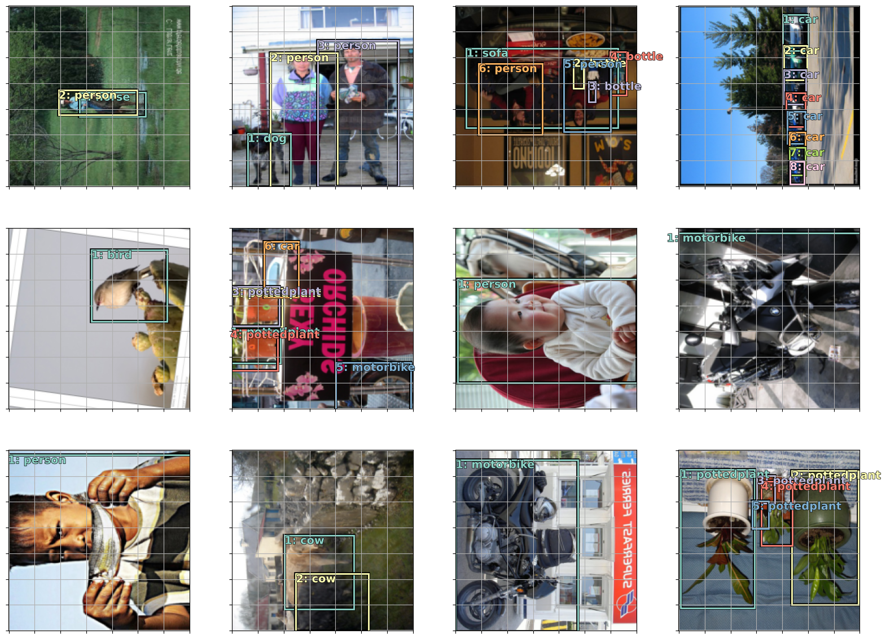
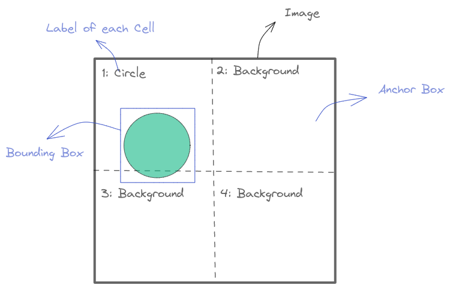
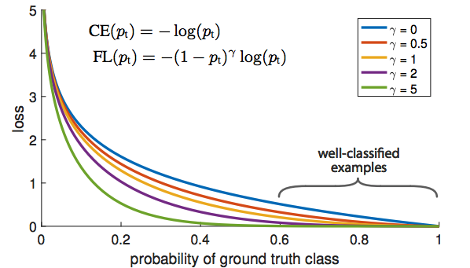
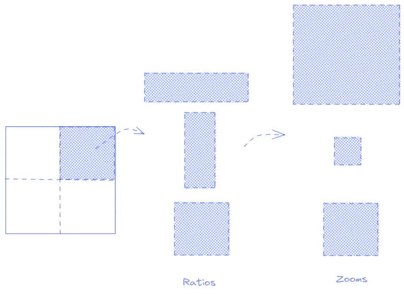

Object Detection - Single Shot Detector for fastai V2
Object Detection
Recently, I had a project that needs to modify an Object Detection Architecture. However, when I searched for related repositories, I found it quite difficult to understand. We have a lot of libraries for use out of the box but hard to make changes to the source code.
This blog is the implementation of Single Shot Detector Architecture using fast.ai in literate programming style so the readers can follow and run each line of code themselves in case needed to deepen their knowledge.
The original idea was taken from the fastai 2018 course. Readers are recommended to watch this lecture. 2018 Lecture
Object Detection DataLoaders from fastai DataBlock which contains Image, Bounding Box and Label. Understanding how the data resemble
Building Single Shot Detector (SSD) - Object Detection Model
Simple 4x4 Anchor Boxes. Relation between Receptive field and Anchor Boxes.
Loss function, Visualize Match to Ground-Truth
Classification Loss Discussion: Binary Cross Entropy and why Focal Loss is better
More Anchor Boxes: 3 layers of grids ( 4x4, 2x2, 1x1 ) with 9 variations (Zoom,Scale) / cell
Training and Results
Cleaning predictions with Non Maximum Supression (NMS)
from fastai.vision.allimport*
/home/ubuntu/miniconda3/envs/blog/lib/python3.10/site-packages/tqdm/auto.py:22: TqdmWarning: IProgress not found. Please update jupyter and ipywidgets. See https://ipywidgets.readthedocs.io/en/stable/user_install.html
from .autonotebook import tqdm as notebook_tqdm
Object Detection Dataloaders
For objection detection, you have:
1 independent variable (X): Image
2 dependents variables (Ys): Bounding box and Class
In this part, we will use fastai DataBlock to build Object Detection Dataloaders. The idea is from each image file name, we will have:
An Image
Bounding Boxes getting from the annotations file
Labels correspond to each bounding box
Note
Zero padding: Each image have a different number of objects. Then, to make it possible to gather multiple images to one batch, the number of bounding boxes per image is the maximum in that batch (the padding value by default is 0) bb_pad
Background class: In Object Detection, we need to have a class that represents the background. fastai do it automatically for you by adding #na# at index 0
The coordinates of bounding box is rescaled to ~ -1 -> 1 in fastai/vision/core.py _scale_pnts
In a nutshell, Object Detection Model is a model that does 2 jobs at the same time:
a regressor with 4 outputs for bounding box
a classifier with c classes.
To handle multiple objects, here comes the grid cell. For each cell, you will have an atomic prediction for the object that dominates a part of the image ( This is the idea of the receptive field that you will see in the next part )
My Intuition
In Machine Learning, it is better to improve from something rather than start from scratch. You can see this in: Image Classification Architecture - Resnet with the Skip Connections, or Gradient Boosting in Tree-based Model. There is a common point in the grid-cell SSD architecture, the model will try to improve from an anchor box rather than searching through the whole image.
We should better leverage a well-known pretrained classification model to be used as a backbone / or body ( resnet in this tutorial ) if the object is similar to the Imagenet dataset. The head part will follow to adapt to the necessary dimension
To easily develop the idea - visualize and debug, we will start with a simple 4x4 grid
def flatten_conv(x,k):# Flatten the 4x4 grid to dim16 vectors bs,nf,gx,gy = x.size() x = x.permute(0,2,3,1).contiguous()return x.view(bs,-1,nf//k)
class OutConv(nn.Module):# Output Layers for SSD-Head. Contains oconv1 for Classification and oconv2 for Detectiondef__init__(self, k, nin, bias):super().__init__()self.k = kself.oconv1 = nn.Conv2d(nin, (len(dls.vocab))*k, 3, padding=1)self.oconv2 = nn.Conv2d(nin, 4*k, 3, padding=1)self.oconv1.bias.data.zero_().add_(bias)def forward(self, x):return [flatten_conv(self.oconv1(x), self.k), flatten_conv(self.oconv2(x), self.k)]
class SSD_Head(nn.Module):def__init__(self, k, bias):super().__init__()self.drop = nn.Dropout(0.25)self.sconv0 = StdConv(512,256, stride=1)self.sconv2 = StdConv(256,256)self.out = OutConv(k, 256, bias)def forward(self, x): x =self.drop(F.relu(x)) x =self.sconv0(x) x =self.sconv2(x)returnself.out(x)
We start with k = 1 which is the number of alterations for each anchor box ( we have a lot of anchor boxes later )
k=1
head_reg4 = SSD_Head(k, -3.)
body = create_body(resnet34(True))model = nn.Sequential(body, head_reg4)
/home/ubuntu/miniconda3/envs/blog/lib/python3.10/site-packages/torchvision/models/_utils.py:135: UserWarning: Using 'weights' as positional parameter(s) is deprecated since 0.13 and will be removed in 0.15. Please use keyword parameter(s) instead.
warnings.warn(
/home/ubuntu/miniconda3/envs/blog/lib/python3.10/site-packages/torchvision/models/_utils.py:223: UserWarning: Arguments other than a weight enum or `None` for 'weights' are deprecated since 0.13 and will be removed in 0.15. The current behavior is equivalent to passing `weights=ResNet34_Weights.IMAGENET1K_V1`. You can also use `weights=ResNet34_Weights.DEFAULT` to get the most up-to-date weights.
warnings.warn(msg)
To understand and verify that everything works ok, you can take out a batch and run the model on it
As mentioned before, we will start with a 4x4 grid to better visualize the idea. The size will be normalized to [0,1]
The idea of why, after the Body, we use Conv2d and not Linear Layer to make a 4x4x(4+c) output dimension instead of 16x(4+c) shape is - Receptive Field. This way, each cell will have information that comes directly from the location corresponding to the anchor box. The illustration is below.
SSD vs YOLO
Receptive Field
Warning
Be very careful about the bounding box format when working with Object Detection. There are many different formats out there. For example:
pascal_voc: [x_min, y_min, x_max, y_max]
coco: [x_min, y_min, width, height]
YOLO: [x_center, y_center, width, height]
The bounding box format in this tutorial is [x_min, y_min, x_max, y_max]
anc_grid =4# Start with only 4x4 grid and no variation for each cellk =1# Variation of each anchor boxanc_offset =1/(anc_grid*2)anc_x = np.repeat(np.linspace(anc_offset, 1-anc_offset, anc_grid), anc_grid) # Center of anc in xanc_y = np.tile(np.linspace(anc_offset, 1-anc_offset, anc_grid), anc_grid) # Center f anc in y
It is very helpful (to understand/ debug) when you can visualize data of every step. Many subtle tiny details happen in this Object Detection Problem. One careless implementation can lead to hours (or even days) to debug. Sometimes, you just wish that the code throws you some bugs that you can trackback.
Warning
There are some details that you need to double check
Are your ground truth bounding boxes, anchor boxes, bounding box activations are in the same scale ( -1 -> 1 or 0 -> 1 ) ?
Do the background class is handled correctly? ( This is a bug when I develop this notebook that the old version of the fastai course set the index of background as number_of_classes but in the latest version, it is 0 )
Do you map correctly each Anchor Box to the ground-true object? (This will be shown in the next session)
Note
Dont hesitate to take out one batch from your dataloader and verify every single detail. When I start to use fast.ai, I made a big mistake that thinking these data are already processed and we can not show things directly from there. This data is very important, it is the input of your model. It must be carefully double-checked.
Below we will try to plot some images from a batch with their bounding boxes and classes, to see that we did not missing anything
import matplotlib.colors as mcolorsimport matplotlib.cm as cmxfrom matplotlib import patches, patheffects
Extracting one batch for your dataloader and see if the data is OK
x = one_batch[0].permute(0,3,2,1).cpu()
y = one_batch[1:]
Because the bounding box in the dataloader is scaled to -1 -> 1, it needs to be rescaled to 0 -> 1 for drawing by doing (bb+1)/2*Size
## Bounding Box after dataloader should Rescalefig, axes = plt.subplots(3, 4, figsize=(16, 12))for i,ax inenumerate(axes.flat): show_ground_truth(ax, x[i].cpu(), ((y[0][i]+1)/2*224).cpu(), y[1][i].cpu())plt.tight_layout()

Everything looks fine! We have correct bounding boxes and their corresponding classes
Map to Ground-Truth and Loss function
As you might guess, There are 2 components forming the Object Detection Loss: Classification Loss (For the class) and Localization Loss (For the bounding box)
The idea is, for each image, we will: - Calculate the Intersection-over-Union (IoU) of each predefined Anchor Box with the Object Bounding Box. - Assign the label for each cell (Map to ground truth) according to the IoUs. Background will be assigned to Cell which overlaps with no object - Calculate the Classification Loss for all Cells - Calculate the Bounding Box Location Loss only for Cells responsible to Objects (no Background) - Take the sum of these 2 losses
Note
Currently, we will loop for each image in a batch to calculate its loss and then sum them all. I think we might have a better way to vectorize these operations, or, calculate everything in one shot directly with a batch tensor

Map to Grouth Truth
def get_y(bbox,clas):""" Remove the zero batching from a batch Because the number of object in each image are different so we need to zero padding for batching """ bbox = bbox.view(-1,4) clas = clas.view(-1,1) bb_keep = ((bbox[:,2]-bbox[:,0])>0).nonzero()[:,0]return TensorBase(bbox)[bb_keep],TensorBase(clas)[bb_keep]
def jaccard(box_a, box_b):""" Jaccard or Intersection over Union """ inter = intersect(box_a, box_b) union = box_sz(box_a).unsqueeze(1) + box_sz(box_b).unsqueeze(0) - interreturn inter / union
Map to Ground Truth (Visualization below). The idea is looping through all anchor boxes and calculating the overlaps with the Ground Truth bounding boxes, then assigning each Anchor Box to the corresponding class
For calculating loss, we will loop through every images in a batch and calculate loss for each image (ssd_1_loss), then summing the result with ssd_loss. The Classification Loss (loss_f) currently is left empty as we will discussion it later in the next section.
Classificaton Loss: Binary Cross Entropy and why Focal Loss
2 tricks can be used for Classification Loss:
Binary Cross-Entropy Loss without background
Further improve Binary Cross-Entropy Loss with Focal Loss
Binary Cross-Entropy
If we treat the Background Class as one class and ask the Model to understand what is a Background, it might be too difficult. We can translate it to a set of easier questions: Is it a Cat? Is it a Dog? through all the classes, which is exactly what Binary Cross-Entropy does
Focal Loss
The classification task in object detection is very imbalance that we have a lot of background objects (check the Match to Ground-Truth image above). If we just use Binary Cross-Entropy Loss function, it will try all efforts to improve background classification

Focal Loss vs Binary Cross Entropy Loss
Quote from fastai2018 course:
The blue line is the binary cross entropy loss. If the answer is not a motorbike, and I said I think its not a motorbike and I am 60% sure with the blue line, the loss is still about 0.5 which is pretty bad. So if we want to get our loss down, then for all these things which are actually back ground, we have to be saying I am sure that is background, I am sure its not a motorbike, or a bus, or a person because if I dont say we are sure it is not any of these things, then we still get loss.
That is why the motorbike example did not work. Because even when it gets to lower right corner and it wants to say I think its a motorbike, there is no payoff for it to say so. If it is wrong, it gets killed. And the vast majority of the time, it is background. Even if it is not background, it is not enough just to say its not background you have to say which of the 20 things it is.
So the trick is to trying to find a different loss function that looks more like the purple line. Focal loss is literally just a scaled cross entropy loss. Now if we say Im .6 sure its not a motorbike then the loss function will say good for you! no worries.
class BCE_Loss(nn.Module):def__init__(self, num_classes):super().__init__()self.num_classes = num_classesdef forward(self, pred, targ): t = one_hot_embedding(targ.squeeze(), self.num_classes) t = t[:,1:] # Start from 1 to exclude the Background x = pred[:,1:] w =self.get_weight(x,t)return F.binary_cross_entropy_with_logits(x, t, w.detach(), reduction='sum')/self.num_classesdef get_weight(self,x,t): returnNone
class FocalLoss(BCE_Loss):def get_weight(self,x,t): alpha,gamma =0.25,1 p = x.sigmoid() pt = p*t + (1-p)*(1-t) w = alpha*t + (1-alpha)*(1-t)return w * (1-pt).pow(gamma)
The ssd_loss will loop through every image in a batch and accumulate loss
The loss decreases, and the model can learn something. Looking at the results shown below, we can see that the predictions are not so bad but not particularly good either. In the next session, we can see how to improve the results with more anchor boxes
As said earlier, the anchor box is a hint for the model to not go too far and focus on a part of the image. So obviously, 4x4 grid is not enough to predict an object of any size. In this part, by adding more Conv2d layers, we will have 3 grids: 4x4, 2x2, 1x1 and each cell will have 9 variations: 3-zooms and 3-ratios
The total number of anchors is: (16 + 4 + 1) x 9 = 189 anchors

image8.png
# This is for release the GPU memrory while experimenting. I guess it is not enough. Please tell me if you know a better waydel learnerdel modelimport gc; gc.collect()torch.cuda.empty_cache()
anc_grids = [4,2,1]anc_zooms = [0.7, 1., 1.3]anc_ratios = [(1.,1.), (1.,0.5), (0.5,1.)]anchor_scales = [(anz*i,anz*j) for anz in anc_zooms for (i,j) in anc_ratios]k =len(anchor_scales)anc_offsets = [1/(o*2) for o in anc_grids]k
anc_sizes = np.concatenate([np.array([[o/ag,p/ag] for i inrange(ag*ag) for o,p in anchor_scales])for ag in anc_grids])grid_sizes = torch.tensor(np.concatenate([np.array([ 1/ag for i inrange(ag*ag) for o,p in anchor_scales])for ag in anc_grids]), requires_grad=False).unsqueeze(1).cuda()anchors = torch.tensor(np.concatenate([anc_ctrs, anc_sizes], axis=1), requires_grad=False).float().cuda()anchor_cnr = hw2corners(anchors[:,:2], anchors[:,2:]).cuda()
anchor_cnr.shape
torch.Size([189, 4])
We need to adjust the SSD head a little bit. We will add more Conv2D layer with StdConv (to create 2x2 and 1x1 grids). After each StdConv is an OutConv to handle the Classification prediction and Localization prediction
class SSD_MultiHead(nn.Module):def__init__(self, k, bias):super().__init__()self.drop = nn.Dropout(drop)self.sconv0 = StdConv(512,256, stride=1, drop=drop)self.sconv1 = StdConv(256,256, drop=drop)self.sconv2 = StdConv(256,256, drop=drop)self.sconv3 = StdConv(256,256, drop=drop)self.out0 = OutConv(k, 256, bias)self.out1 = OutConv(k, 256, bias)self.out2 = OutConv(k, 256, bias)self.out3 = OutConv(k, 256, bias)def forward(self, x): x =self.drop(F.relu(x)) x =self.sconv0(x) x =self.sconv1(x) o1c,o1l =self.out1(x) x =self.sconv2(x) o2c,o2l =self.out2(x) x =self.sconv3(x) o3c,o3l =self.out3(x)return [torch.cat([o1c,o2c,o3c], dim=1), torch.cat([o1l,o2l,o3l], dim=1)]
drop=0.4
head_reg4 = SSD_MultiHead(k, -4.)
body = create_body(resnet34(True))model = nn.Sequential(body, head_reg4)
The result looks better than the simple version above
Non Maximum Suppression (NMS)
You can see in the previous results, that having a lot of Anchor Boxes leads to many overlaps. You can use Non Maximum Suppression, a technique to choose one bounding box out of many overlapping ones
def nms(boxes, scores, overlap=0.5, top_k=100): keep = scores.new(scores.size(0)).zero_().long()if boxes.numel() ==0: return keep x1 = boxes[:, 0] y1 = boxes[:, 1] x2 = boxes[:, 2] y2 = boxes[:, 3] area = torch.mul(x2 - x1, y2 - y1) v, idx = scores.sort(0) # sort in ascending order idx = idx[-top_k:] # indices of the top-k largest vals xx1 = boxes.new() yy1 = boxes.new() xx2 = boxes.new() yy2 = boxes.new() w = boxes.new() h = boxes.new() count =0while idx.numel() >0: i = idx[-1] # index of current largest val keep[count] = i count +=1if idx.size(0) ==1: break idx = idx[:-1] # remove kept element from view# load bboxes of next highest vals torch.index_select(x1, 0, idx, out=xx1) torch.index_select(y1, 0, idx, out=yy1) torch.index_select(x2, 0, idx, out=xx2) torch.index_select(y2, 0, idx, out=yy2)# store element-wise max with next highest score xx1 = torch.clamp(xx1, min=x1[i]) yy1 = torch.clamp(yy1, min=y1[i]) xx2 = torch.clamp(xx2, max=x2[i]) yy2 = torch.clamp(yy2, max=y2[i]) w.resize_as_(xx2) h.resize_as_(yy2) w = xx2 - xx1 h = yy2 - yy1# check sizes of xx1 and xx2.. after each iteration w = torch.clamp(w, min=0.0) h = torch.clamp(h, min=0.0) inter = w*h# IoU = i / (area(a) + area(b) - i) rem_areas = torch.index_select(area, 0, idx) # load remaining areas) union = (rem_areas - inter) + area[i] IoU = inter/union # store result in iou# keep only elements with an IoU <= overlap idx = idx[IoU.le(overlap)]return keep, count